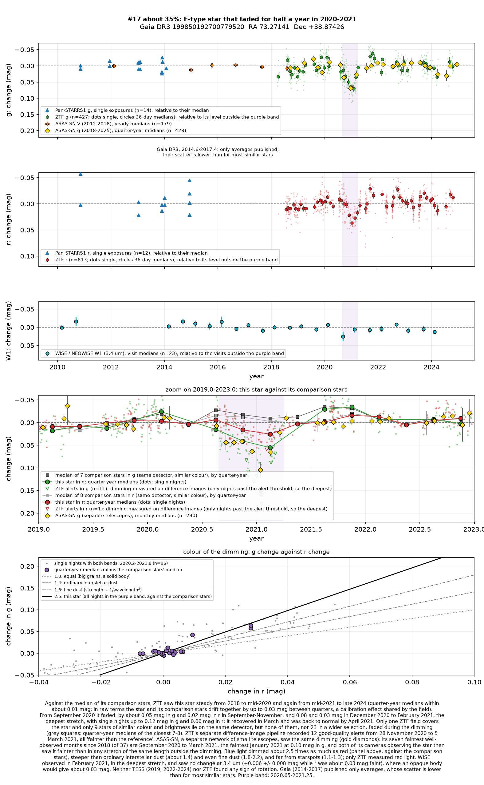
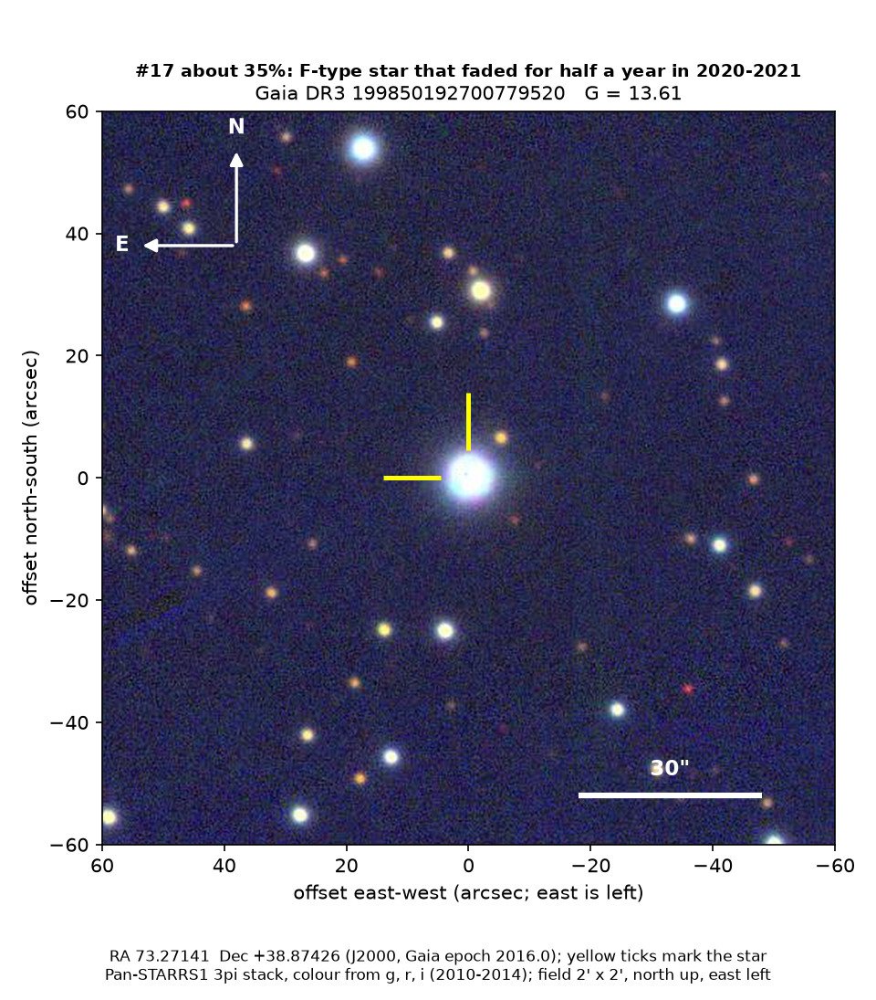
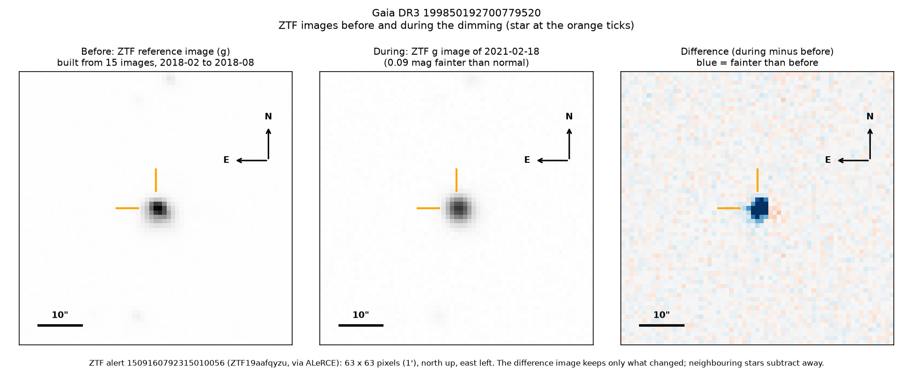
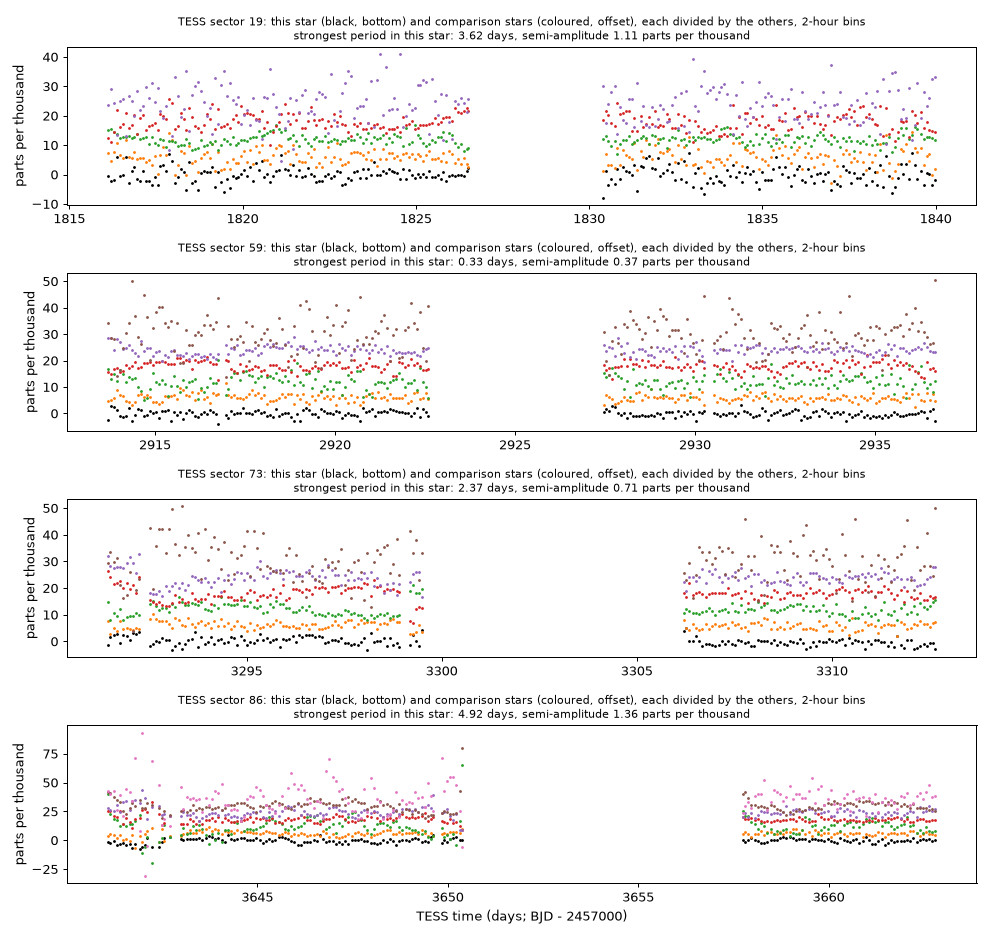

Professor of Mathematics
Paata Ivanisvili
Department of Mathematics, University of California, Irvine

Candidate 17: a yellow-white star that faded for about half a year
Why this estimate. The dimming is certainly real: ZTF (the Zwicky Transient Facility, a survey telescope at Palomar Observatory in California) and ASAS-SN (a worldwide network of small telescopes) both recorded it. Its colour and the lack of any rotation argue against starspots. The estimate is not higher because the colour rests on ZTF alone and is steeper than even fine dust usually gives, so a problem with ZTF’s red-light measurements of this fairly bright star cannot be excluded; because only one ZTF field covers it; and because there is no spectrum.
How to read the pictures. The finder chart shows a patch of sky two arcminutes across, about a fifteenth of the Moon’s width, with north up and east to the left. The star sits between the two yellow ticks, and the white bar is 30 arcseconds long. On a light curve the vertical axis is magnitude, a brightness scale on which larger numbers mean fainter stars, and it is drawn so that down means fainter. Purple shading marks the dimming. Each survey uses slightly different filters, so each is compared with its own normal level. The ZTF pictures show ZTF’s reference image of the star, an image taken during the dimming, and the difference between the two, in which only what changed remains: blue means fainter and red brighter. On the TESS light curves the star is black and the comparison stars are coloured.

What changed. The star is a yellow-white F-type star in Auriga, somewhat hotter than the Sun, about 1,100 parsecs (3,600 light-years) away and seen through a lot of interstellar dust. It is probably a subgiant, a star that has begun to evolve away from its long hydrogen-burning stage. Steady from 2018 to mid-2020, it faded by about 0.05 magnitudes in green light and 0.02 in red from September to November 2020, and by 0.08 and 0.03 from December to February; by April 2021 it was back to normal.
Only nine comparable stars lie on the same ZTF detector, but none of them faded, nor did any of 23 in a wider selection. ZTF’s alert system, which compares each new image with a reference image, recorded 12 good-quality alerts, all fainter than the reference and centred on the star. ASAS-SN’s seven faintest well-observed months are exactly September 2020 to March 2021, while the next faintest is only 0.012 magnitudes faint.
Why it might matter. The colour is the striking part: green light dimmed about 2.5 times as much as red. An opaque body would dim all colours equally, starspots on a star like this give about 1.1 to 1.3, ordinary interstellar dust 1.4 and fine dust 1.8 to 2.2, so this would need grains much smaller than ordinary interstellar ones. A star dimmed by up to 12 per cent by spots usually shows the wave of its rotation, but neither ZTF, in seven seasons, nor NASA’s TESS space telescope, in four separate years, found one.
The star is quiet in the measurements of Gaia, the European Space Agency’s star-mapping satellite, and an F-type subgiant has only a thin convective layer, which makes large spots unlikely. Its normal ultraviolet brightness in NASA’s GALEX telescope argues against a fading hot companion, WISE shows no disc of warm dust around the star, and NEOWISE saw no change at 3.4 microns in February 2021, which disfavours an opaque body. The simplest explanation is a cloud of very fine dust drifting across the line of sight; if ZTF underestimated the dimming in red light, ordinary dust would fit better. A spectrum would settle the star’s type.
No record of the dimming could be found. The star is not in SIMBAD, VSX (the variable-star index), Gaia’s variable-star lists or any other catalogue consulted, nor among the dimming stars of Tzanidakis et al. (2025), the nearest of which is 1.2 degrees away. No transient report, Gaia alert or paper names it, and ZTF’s alert system holds only machine-generated classifications, none of them confident.
- Star
- Gaia DR3 199850192700779520, a reddened yellow-white F-type star, probably a subgiant
- Location
- RA 73.27141°, Dec +38.87426° (J2000), in Auriga, 3.2 degrees south of the Milky Way’s mid-plane
- Distance
- about 1,100 parsecs (3,600 light-years)
- Brightness
- Gaia G = 13.61, far too faint for the eye
- Probability
- This candidate is unconfirmed. The percentage under the title is an estimate of the chance that it is a real, previously unrecorded case of the kind described. The estimate has not been checked by outside experts. See the introduction to all fifty-eight candidates.
- Caveat
- There is no spectrum, and Gaia gives only a spectral class, so the star’s temperature, size and reddening are uncertain. The colour comes from ZTF alone, and only one ZTF field, with few comparison stars, covers the star. Five other stars that dimmed in the same survey data lie 16 to 22 degrees away in the same broad direction, one of them already published by Tzanidakis et al. (2025); all were faintest in the second half of 2021, about a year after this star, and three dimmed with a similarly steep colour. ASAS-SN recorded this star’s dimming independently.


